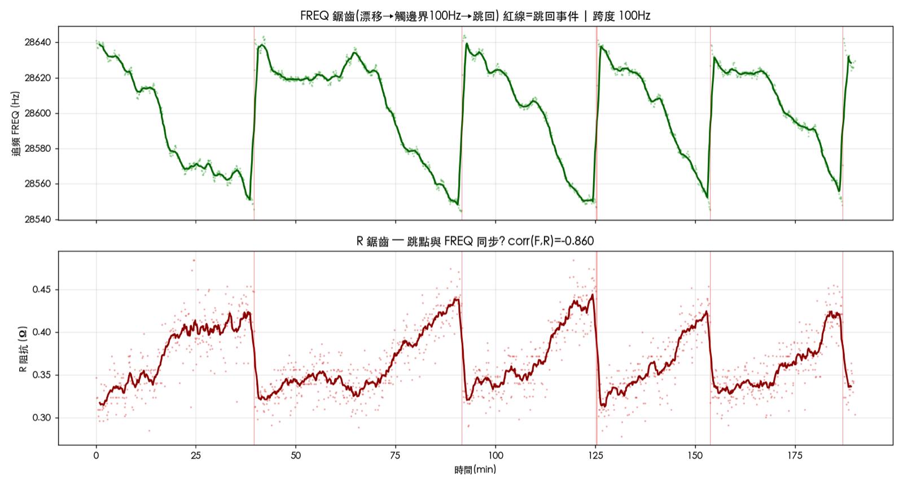
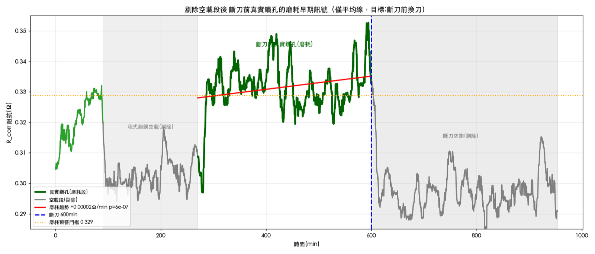
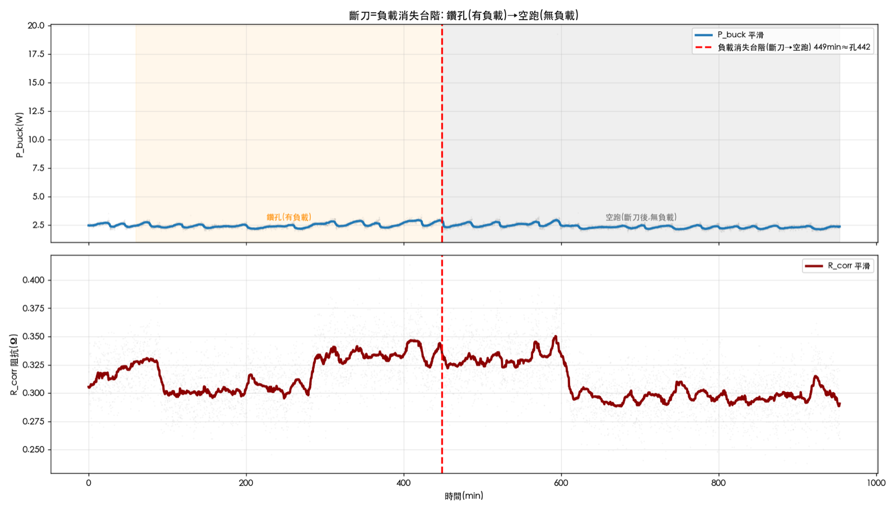

一、加工條件
本次為石英的旋轉超音波加工（RUM，刀具旋轉＋軸向超音波振動同時進行），採 G83 全退啄鑽。每孔的時序由 NC 程式決定，與刀具材質無關。
| 項目 | 值 | 備註 |
|---|---|---|
| 工件材料 | 石英 | 脆性硬質 |
| 加工方式 | 旋轉超音波加工（RUM） | 旋轉 + 軸向超音波 |
| 鑽孔循環 | G83 全退啄鑽 | 每刀退到入孔表面上 0.1 mm |
| 每刀進給 Q | 0.1 mm | 每啄只吃 0.1 mm 新料 |
| 切削進給 | 12 mm/min（0.2 mm/s） | |
| 切削相時間 | 0.5 s（固定） | ＝ Q ÷ 進給，與孔深無關 |
| 孔深 | 4.0 mm | |
| 每孔啄數 | ~40 | ＝ 4.0 ÷ 0.1 |
| 單啄週期 | 1-3 s | 淺孔 ~1 s、深孔 ~3 s（退刀距離隨深度增長） |
| 每孔工時 | 61 s | NC 程式決定，固定值 |
| 主軸轉速 | 12000 rpm | |
| 驅動器 | UD7 超音波驅動器 | 追頻 TrackRange = 100 Hz |
| 取樣率 | 0.5 s/筆 | 硬體上限，無法更快 |
二、監測方法：從驅動器電性看刀尖負載
用什麼量？阻抗實部 R = Re(Z)
R 不是量測欄位，是從驅動器四個原始欄位算出的代理量：
R = Buck_VO × Buck_IO / IFB² = P_buck / IFB²
由歐姆關係 P = I²R 得到。物理上 R 是換能器的機械阻尼電阻——刀尖咬料（負載）時更多能量轉成機械功，阻尼電阻上升，R 隨之上升。所以 R 反映刀尖接觸的機械負載。
為什麼不直接看電流？因為閉環把電流鎖死了
驅動器以閉環鎖定振幅（VFB 為設定值），所以換能器電流 IFB 幾乎不隨負載變動。下圖以 d′（可分性指標）量化：在 IFB 上，空載與負載完全重疊（d′ ≈ 0）；在 P_buck（直流端實功）上才分得開（d′ = 2.38）。負載資訊不在電流，在直流端實功與阻抗。

必做的前處理：頻率校正
追頻會熱漂移到 TrackRange = 100 Hz 邊界後跳回初始鎖頻點，而 R 對「操作頻率離共振多遠」很敏感，於是產生一條與刀況無關的鋸齒（週期約 30-38 分鐘）。下圖證實：FREQ 與 R 反相同步，相關係數 −0.86、R² = 0.74。

對策是頻率校正——用 R_corr = R − (a + b·FREQ) + 平均 扣掉這層鋸齒，雜訊約減半。後續所有刀況判讀都用校正後的 R_corr。
三、成果
成果一：磨耗可偵測，且提前 200-300 孔預警
把程式錯誤的空載段與斷刀後空跑段剔除，只留真實鑽孔資料後，R_corr 在斷刀前呈單調上升（刀漸鈍→機械阻抗升），統計上顯著。升幅雖小（+2-5%），但因為是趨勢、可由長期迴歸從雜訊中釣出。關鍵是：這條上升在真正斷刀前 200-300 孔就已可辨，足夠提前換刀。

成果二：斷刀＝負載掉到空載水位
斷刀（約 600 分鐘、~450 孔）不是瞬間突跳，而是切削負載消失：刀尖斷掉後程式繼續空跑，沒有真正接觸工件，R_corr 從鑽孔的 ~0.33 階梯式掉到空載的 ~0.30。鑽孔與空載相差約 10%——這個落差就是「有沒有在切」的判據。

成果三：兩層「斷刀前換刀」預警法
綜合以上，給出可落地的監測策略：
- 第一層閘門｜先判「在不在鑽孔」：R_corr 在鑽孔水位（~0.33）才納入判斷；落到空載水位（~0.30）代表空載或已斷，剔除不算。
- 第二層預警｜在真實鑽孔上追磨耗：以新刀前 ~50 孔為基準，滾動監控 R_corr，累積升幅 ≥ 3-5% 且持續，即預警換刀。
三個前置紀律缺一不可，否則小訊號會被淹沒：
- 頻率校正（扣追頻鋸齒）
- 只用真實鑽孔循環（剔除空載段）
- 長滾動窗（數十孔）平均掉雜訊
四、結論
用既有電性記錄監測石英微鑽孔刀況是可行的，但要認清它的能與不能：
| 刀況事件 | 電性變化 | 偵測法 | 能不能抓 |
|---|---|---|---|
| 磨耗 | R_corr 升 +2-5% | 長期趨勢迴歸 | 可（提前 200-300 孔預警） |
| 斷刀 | 負載掉到空載水位（~10%） | 負載消失台階 | 可（確認斷刀，位置吻合） |
根本特性是：石英切削負載弱，所有訊號都是小訊號，但只要方向對、處理對，磨耗趨勢做提前預警、負載台階做斷刀確認，兩者搭配即可在實際斷刀前把刀換掉。這正是這套監測的價值——不是抓斷刀的那一瞬間，而是在它斷之前就看出端倪。